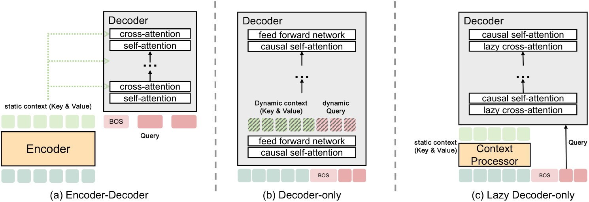
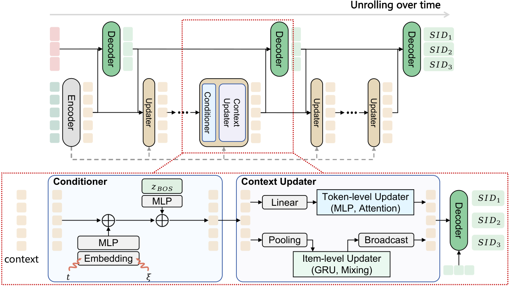
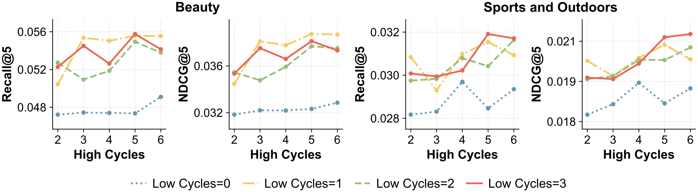

目录 · 9 节
1它到底在解决什么问题？2整体结构：一个编码器、一个共享解码器、一个小更新器3更新器：让历史跟着预测一起变4两层循环各管什么5循环轨迹自蒸馏：把 16 遍压到 4 遍6和现有方法比7我认为它的局限8一个推荐/搜索团队可以怎么试9一句话结论生成式推荐想变强，通常就是加层，而加层就是加参数、加显存。腾讯的 LoopGR（一种循环复用解码器的生成式推荐结构）换了个办法：同一个解码器反复跑好几遍，每两遍之间用一个很小的 GRU 模块，根据解码器当前的预测状态把用户历史的表示改一遍，再交给下一遍解码。计算深度因此和参数量脱钩。在同样约 0.5 GFLOPs 的计算量下，它只用 1.3M 参数，比 2.7M 参数的 encoder-decoder 效果还好；在腾讯的工业数据上，Recall@10 是 0.6458，高于 TIGER 的 0.6125 和线上模型 BARGE 的 0.6277。为了控制延迟，作者再把 16 遍循环的模型蒸馏成 4 遍，单条请求延迟从 211 毫秒降到 50 毫秒，效果基本不掉。
关心生成式推荐线上成本的团队值得读。它回答的是一个很实际的问题：显存和参数预算卡死时，还能从哪里要效果。核心思想一句话：解码器负责反复修正对目标 SID 的预测，更新器负责让用户历史跟着预测一起变。它的证据主要来自几个物品数在一万到六万之间的小数据集，模型也只有百万参数级，工业数据上没有线上 A/B，这些都限制了结论能推多远。
它到底在解决什么问题？
SID 生成式推荐把每个物品编成几层离散 token，模型读用户历史，再逐层生成下一个物品的 SID。计算主要花在两处：理解用户历史，和生成目标 SID。现有结构在这两处的分配各不相同。

这三种结构有一个共同点：历史一旦编码完，在生成过程中就是固定的。用一个示意场景说明为什么这是个问题：
| 用户历史（示意） | 解码第一层 SID 时 | 理想情况下历史该怎么变 |
|---|---|---|
| 跑鞋、蛋白粉、瑜伽垫、儿童绘本 | 第一层预测偏向“运动”大类 | 跑鞋和蛋白粉的权重应该提高，绘本应该降低 |
| 同上 | 固定历史的模型 | 四件物品的表示不变，第二层仍要从一份混杂的历史里挑信息 |
另一个问题是深度和参数绑在一起。想让历史表示多改几轮，就得多加几层，而推荐系统的显存和延迟预算比大模型紧得多。LoopGR 想同时解决这两点：让历史在生成过程中跟着变，并且多算几轮不多加参数。
整体结构：一个编码器、一个共享解码器、一个小更新器

| 部件 | 做什么 | 跑几次 |
|---|---|---|
| 编码器 | 把用户历史里每个物品的 SID token 编码成初始历史表示 | 1 次 |
| 解码器 | 读当前历史表示和自己上一遍的隐状态，输出对下一个 SID token 的预测 | 每生成一层 SID 都要跑一套循环： 轮各 1 遍，最后再 1 遍出结果，全部共享参数 |
| 更新器 | 用解码器的当前状态改写历史表示 | 每轮解码之后跑 次，共享参数 |
作者把解码器的循环叫高层循环，次数记为 ；把更新器的循环叫低层循环，次数记为 。总流程可以写成：编码一次，然后把“解码一遍、更新 次”作为一轮，重复 轮，最后在改写好的历史上再解码一遍出结果。比如 、 时，顺序是编码、解码、更新、解码、更新、解码，解码器一共跑 3 遍，更新器跑 2 次。下面拆开讲。
更新器：让历史跟着预测一起变
为什么需要更新器？如果历史表示在各遍之间保持不变，解码器每一遍读到的都是同一份历史，重复解码能做的修正就很有限。作者做了对照：把更新器换成什么都不做的恒等变换，效果平均下降约 8%。这说明收益主要来自“历史在变”，而不是解码器多跑了几遍。
更新器要改写的对象是当前的历史表示，即每个历史 SID token 一个向量。它另外读两样信号。一是解码器输出里开头 BOS 位置的隐状态。BOS 位置通过交叉注意力读取整份历史，也继承了上一遍的状态，作者用它代表模型此刻对目标物品的整体判断，经过一个 MLP 变成查询向量。二是当前的高层轮次、低层轮次和 SID 层级信息，经过嵌入和 MLP 变成条件向量。这里要说明嵌套关系：目标 SID 仍然逐层自回归生成，每生成一层，都先把这套循环跑完，再用最后的预测确定这一层的 token，然后带着已生成的前缀去生成下一层。循环内部，解码器每一遍的输入是上一遍自己输出的隐状态（BOS 加已生成前缀的位置）再加上轮次向量，所以预测是一遍遍接着改的，不是从头重算。这两个向量直接加到历史的每个位置上；加完之后，更新器先把同一物品的几个 token 池化成一个物品向量，用轻量 GRU 沿物品顺序处理一遍，再把结果广播回各个 token，得到改写后的历史。
有一个细节很关键：每次改写完，结果都会加回最初的历史表示再做归一化。也就是说，每一轮都是在原始历史上做修正，而不是在上一轮的结果上越改越远。这个锚点让多轮循环更容易训练。 Hoot 说

把更新器换成什么都不做的恒等变换，效果平均下降约 8%；GRU 换成 token 混合或注意力，效果接近。 出处: 论文 §3 更新器（BOS 查询、轮次/层级条件、物品级池化 + GRU + 广播、加回原始历史再归一化）与消融（换成恒等变换平均降约 8%）
用上面的示意例子走一遍：第一遍解码后，BOS 状态偏向“运动”；更新器读到这个状态，把跑鞋和蛋白粉的表示调得更突出；第二遍解码在这份新历史上接着上一遍的状态预测，第一层 SID 的概率分布会更集中。这个逐物品的变化是为了说明机制而设的示意。
作者也比较了几种更新器：默认的 GRU；token 混合，也就是用一个 MLP 沿序列方向把各位置的向量加权混在一起；线性 attention；普通 attention。四者效果接近，在 Sports 数据集上 token 混合甚至略好，说明关键是有一个能改写历史的模块，具体用什么算子关系不大。
两层循环各管什么
作者把编码器和解码器都固定为一层，只改 和 ，看各自的作用。

去掉低层循环，也就是 ，效果显著变差；只要加一两次更新，Recall@5 和 NDCG@5 都会回升。增加 一般也有收益，但到较大深度后不再单调上升。在规模更大的 Sports 上，两者同时加深的收益更明显。这说明两层循环分工明确：高层负责多次修正预测，低层负责在每次修正之间调整历史。
参数效率的对比更直观。在约 0.5 GFLOPs 的同等计算量下，LoopGR 用 1.3M 参数，encoder-decoder 要 2.7M，LoopGR 的 NDCG@5 还更高。论文摘要里说的“参数最多少 52%”就是这组对比。
循环轨迹自蒸馏：把 16 遍压到 4 遍
循环不加参数，却会加延迟，因为每一遍都要按顺序跑。16 遍循环的模型单条请求要 211 毫秒，线上用不起。作者的办法叫 RTSD（循环轨迹自蒸馏）：先训一个跑满 16 遍的教师，再用教师的参数初始化一个只跑 4 遍或 8 遍的学生，让学生模仿教师的整条“预测轨迹”。
为什么不直接拿第 4 遍的结果当输出？作者试了几种常见的省算力办法：每一遍都加监督、加一个提前退出的门控、以及 Goyal 等人 2026 年提出的循环内自蒸馏 ILSD（让同一模型较浅的循环模仿较深循环的输出）。它们和跑满预算的模型相比，8 个指标平均分别低 9.7%、13.2%、9.4%，RTSD 只低 3.2%。作者的解释是，每一遍都直接监督会让中间表示过早停住，后面几遍几乎不再变化，循环的预算就浪费了。
RTSD 的损失有两项。第一项让学生每一遍的预测分布对齐教师对应位置的分布，对应关系是学生第 遍对教师第 遍：
是某一遍、第 层 SID 的预测分布， 就是上面的对应关系。举例来说，教师 16 遍、学生 4 遍时，，学生第 1 遍对齐教师第 4 遍，第 4 遍对齐教师第 16 遍，所以学生每走一步相当于教师走四步。这里的第 遍指第 轮更新之后那一遍解码的输出。按前面的流程，第一遍解码之后每轮更新都接一遍解码，所以第 轮更新之后的那遍解码正是最后出结果的一遍。学生的第 4 遍对齐教师的第 16 遍，意味着学生的最终输出分布直接向教师的最终输出分布靠拢。第二项对齐“变化方向”：学生相邻两遍之间对数概率的变化量，要和教师对应两遍之间的变化量方向一致，用余弦距离衡量。第一项管每一步走到哪，第二项管每一步往哪走。
| 模型 | 计算量 GFLOPs | 单条延迟（毫秒） | Sports NDCG@10 | Beauty NDCG@10 |
|---|---|---|---|---|
| 教师，16 遍 | 17.408 | 211.08 | 0.0248 | 0.0448 |
| RTSD 学生，8 遍 | 8.415 | 104.01 | 0.0250 | 0.0453 |
| RTSD 学生，4 遍 | 3.918 | 49.82 | 0.0261 | 0.0450 |
4 遍学生延迟降到约四分之一，在 Sports 上四个指标都超过了教师，在 Beauty 上持平。作者把学生的中间表示投影到二维上观察，发现学生并不是简单截断了教师的轨迹，而是在第一遍就走出一大步，之后小步收敛到和教师相近的终点。
和现有方法比
公开数据用 Amazon 2014 的美妆（Beauty）、运动户外（Sports）、唱片（CDs）三个类目，对比了传统序列推荐（SASRec 等）和生成式推荐（TIGER、HSTU，以及改进物品编码方式的 ActionPiece 和 RPG（一种并行生成长语义编码的方法））。工业数据来自腾讯线上推荐系统，对比 TIGER、仿照 OneRec V2 的 lazy decoder-only 模型，以及腾讯线上在用的生成式推荐模型 BARGE。
| 数据 | 指标 | TIGER | 最强基线 | LoopGR |
|---|---|---|---|---|
| Beauty | NDCG@10 | 0.0384 | 0.0464（RPG） | 0.0465 |
| Sports | NDCG@10 | 0.0225 | 0.0264（ActionPiece） | 0.0275 |
| CDs | NDCG@10 | 0.0411 | 0.0451（ActionPiece） | 0.0447 |
| 工业数据 | Recall@10 | 0.6125 | 0.6277（BARGE） | 0.6458 |
| 工业数据 | Recall@100 | 0.7164 | 0.7496（BARGE） | 0.7675 |
公开数据上 LoopGR 在 12 个指标里拿了 8 个第一，CDs 上略输 ActionPiece。考虑到它用的是最标准的 RQ-VAE 编码，没有 ActionPiece 和 RPG 那样专门设计的 SID，这个结果说明增益来自结构本身。工业数据上它全面领先，相对 TIGER 的优势随截断位置变大，说明循环修正主要帮助了更深位置的召回。
我认为它的局限
第一，公开数据太小。Beauty 只有约 1.2 万个物品，用户平均历史长度 8.88，模型也只有百万参数级。在这种规模上，参数少一半的意义和工业上动辄几十亿参数的模型很不一样，循环结构在大模型上是否还有同样的参数效率，论文的证据覆盖不到。
第二，工业结果的口径要小心。工业数据上表现最好的是用 token 混合做更新器的版本，表 2 报的正是这个版本，而公开数据的主结果用的是 GRU；更新器的选择看起来是在同一份工业数据上比出来的。而且只有离线 Recall，没有线上 A/B。
第三，延迟仍然偏高。即便压到 4 遍，单条请求仍要约 50 毫秒，而且是 batch 为 1 的测量；循环本身是串行的，没法像加宽网络那样靠并行摊薄。
一个推荐/搜索团队可以怎么试
- 先做最便宜的对照：在现有 SID 生成式模型上，把解码器改成共享参数循环 2 到 3 遍，不加更新器，看效果有没有变化。按论文的结果，这一步提升有限，正好作为后面的基线。
- 加上更新器，用 BOS 状态改写历史并保留加回原始历史的锚点。如果效果比上一步明显更好，说明“历史跟着预测变”在你的数据上成立。
- 训一个循环次数较多的教师，再用 RTSD 蒸馏成 2 到 4 遍的学生，重点比较延迟和指标。和直接每遍监督的版本对比，确认蒸馏确实比简单截断好。
- 最后在参数预算受限的场景上线 A/B，比如显存紧张的召回服务，比较同等参数量下与现有结构的差距。
一句话结论
在参数和显存受限的推荐系统里，用循环换深度是一条可行的路，关键是循环时让用户历史跟着预测一起更新，而不是只让解码器空转。
| 维度 | 评价 |
|---|---|
| 问题重要性 | 中高。推荐模型的参数和显存预算比大模型紧，计算如何分配是实际问题 |
| 方法创新性 | 中高。循环 Transformer 不新，新意在用更新器在解码轮次之间改写历史，以及按轨迹做自蒸馏 |
| 实验证据 | 中。消融和深度分析完整，但公开数据很小，工业数据只有离线结果 |
| 工程成本 | 中。参数少，但循环串行带来延迟，必须配合蒸馏 |
| 是否值得尝试 | 值得在显存受限的生成式召回上试，先从更新器的对照开始 |
| 适用场景 | 参数预算受限、能接受几十毫秒级生成延迟的 SID 生成式推荐 |
读完这篇，你觉得
夜读鸮记下了，谢谢你的反馈。
点一下即可，无需登录；再点一次撤回。只统计匿名次数，不记录你是谁。
讨论
欢迎补充实验细节、复现经验或不同看法。需 GitHub 登录。
正在加载讨论…